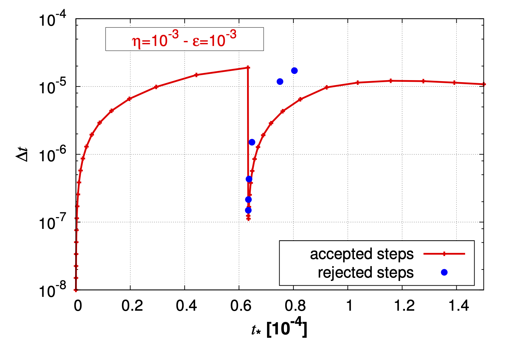
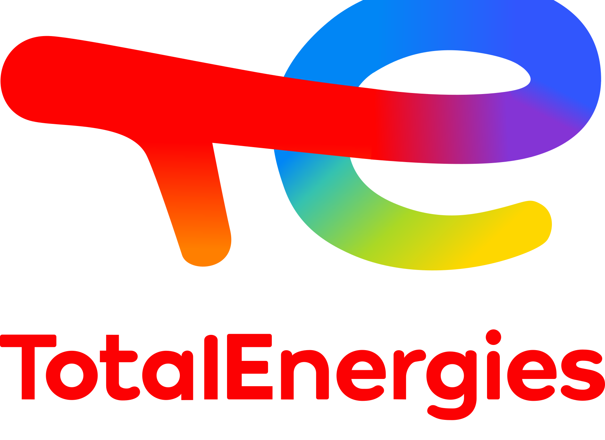

HPC@Maths : Un modèle inédit pour accélérer la recherche et ses applications
27 septembre 2025



Evolution des méthodes mathématiques
Progression parallèle à la loi de Moore
- Un exemple : résolution de système linéaires creux
- Illustration issue d’une réflexion de la société SIAM en 2001 sur le domaine émergeant “Computational Science and Engineering”
- Valable jusque vers 2005 puis saturation progressive sur les sujets “classiques” de la discipline
Emergence de nouvelles approches
- Depuis 2010 changements de paradigmes et solutions innovantes en analyse numérique → ruptures
- HPC : simuler des problèmes de tailles importante sur des architectures classiques (génie biomédical)
- Exemple : adaptation en temps et en espace (sép. d’opérateur pour intégrer la dynamique en temps) et contrôle d’erreur
Passage à un nouveau chapitre de l’analyse numérique depuis 2010


Innovation
Se situe à l’interconnection entre :
- Contribution aux nouvelles approches mathématiques, émergence
- Nouvelles architectures de calcul et techniques d’implémentation
- Enjeux de l’innovation scientifique et technologique = réseau de collab. avec d’autres disciplines et entreprises


Propulsion électrique


Physique complexe fortement multi-échelle
Enjeux
- Couche limite aux parois (gaine) détermine la corrosion et ainsi la durée de vie des propulseurs - Phénomène d’instabilités doivent être reproduits
- Mod√©lisation d‚Äôune physique incluant un large spectre espace/temps (10cm/100ùúám, 10ùúás/0.1ns). - Simulation abordable et pr√©dictive
Modèles pertinents et outils numériques fiables et efficaces
Défis
- Extraire une hiérarchie de modèles mathématiques simples isolant chaque difficulté (non-linéarité, régimes asymptotiques)
- Présence d’échelles multiples (interactions électrostatiques, faible masse des électrons) introduit de la “raideur” numérique
J.P. Boeuf (2017) J. Appl. Phys.

\[ \begin{cases} \lambda^2_D = \displaystyle\frac{\epsilon_0 k_b T_e}{n_e q_e^2} \\\\ \omega^{-1}_{pe} = \displaystyle\sqrt\frac{m_e \epsilon_0}{n_e q_e^2} \end{cases} \]
Limites asymptotiques
dans certaines zones
Des phénomènes microscopiques génèrent des effets macroscopique, instabilités ou couches limites, et doivent être pris en compte et résolus de manière précise dans les simulations
Approche cinétique au niveau mésoscopique et méthode PIC trop coûteuses
→ hiérarchie de modèles fluides - méthode numérique clef
Samurai
Outil pour un ensemble d’applications
- Physique des plasmas (propulsion électrique, prédiction du temps solaire, electron transpiration cooling…)
- Ecoulements diphasiques (propulsion liquide, propulsion aéronautique, moteurs à injection directe, chasse au lancement d’un missile)
- Simulation numérique directe des piles au lithium
Innovation
- Nouvelle structure de données basée sur une algèbre d’ensembles
- Facilité d’implémentation de nouveaux schéma (indépendant de la gestion dynamique du maillage) permettant de créer un écosystème pour les applications
- Mise en place de nouvelles approches (ordonnancement de tâches) pour le parallélisme
Code communautaire Open Source
https://github.com/hpc-maths/samurai
Même code pour les deux applications présentées




Enseignement

Formation mise en place - interaction avec PME & Développement Pédagogie
Conclusion
Positionnement pertinent au coeur de l’innovation
- Expertise Mathématique (CMAP)
- Expertise Informatique (Groupe d’ingénieurs de recherche experts en calcul - développeurs)
- Réseau de collaborations sur les divers axes scientifiques et entreprises
- Production de logiciels open-source
Création d’un écosystème - École et IP Paris
Projet en forte progression
Besoin de renforcer l’écosystème en particulier l’équipe d’Ingénieurs de Recherche experts en Calcul
 27 septembre 2025
27 septembre 2025